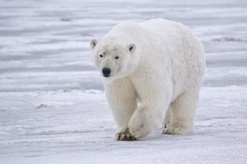
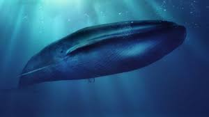
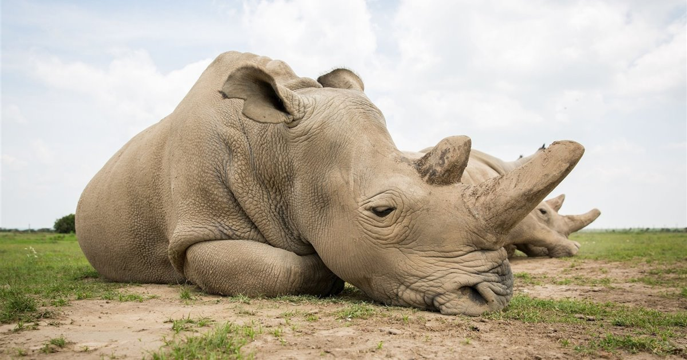
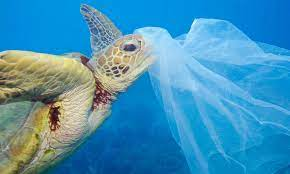
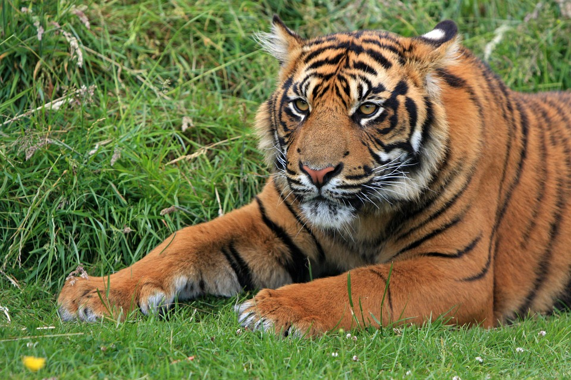
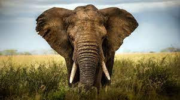
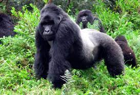
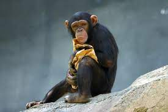
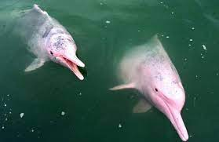

Explicacion
Existen múltiples causas por las que una especie puede llegar a encontrarse al borde de la
extinción. Entre las mayores amenazas se encuentra la destrucción y fragmentanción de sus
hábitats; el cambio climático; la caza y tráfico ilegal; y la introducción de especies exóticas.
Oso Polar

Si hay un animal que está experimentando los devastadores efectos del cambio climático ese es el
oso polar. En peligro extinción desde que en 2008 Estados Unidos decidió incluirlo en la lista
de especies amenazadas, el oso polar está gravemente amenazado. El inconfundible pelaje blanco
de los osos polares ha dado la vuelta a todo el globo como símbolo universal de la emergencia
climática que vive nuestro planeta. El cambio climático está destruyendo la biodiversidad de
nuestro planeta.
Ballenas

Ocho de las trece grandes especies de ballenas siguen en peligro de extinción, son vulnerables,
después de décadas de protección. Según datos de la "Lista Roja de especies amenazadas”,
elaborada por IUCN (Unión Internacional de Conservación de la Naturaleza), que nos permite
conocer el estado de la amenaza de las especies de animales y plantas en el mundo.
Rinocerontes

Con aspecto prehistórico y varias toneladas de peso, los rinocerontes son animales que no dejan
indiferente a nadie. Una de las especies más conocidas del mundo, icono de la fauna africana,
uno de los llamados "big five", las cinco grandes especies que todos los turistas quieren ver en
los safaris africanos.
Existen cinco especies de rinoceronte. Había más, pero algunas de ellas ya están extinguidas. El
rinoceronte en Vietnam se extinguió en 2011 y el rinoceronte negro del oeste se extinguió
también ese mismo año.
Con aspecto prehistórico y varias toneladas de peso, los rinocerontes son animales que no dejan
indiferente a nadie. Una de las especies más conocidas del mundo, icono de la fauna africana,
uno de los llamados "big five", las cinco grandes especies que todos los turistas quieren ver en
los safaris africanos.
Existen cinco especies de rinoceronte. Había más, pero algunas de ellas ya están extinguidas. El
rinoceronte en Vietnam se extinguió en 2011 y el rinoceronte negro del oeste se extinguió
también ese mismo año.
Tortugas

La principal causa de la gran disminución de su población es la explotación de las tortugas por
parte del ser humano, pues recogemos sus huevos o las cazamos para obtener carne o su caparazón.
En los últimos tiempos, se añade nuevos y terribles problemas: la captura incidental en las
pesquerías de palangre, la contaminación de las aguas y la destrucción de sus hábitats.
Tigre de Sumatra

Es el tigre más pequeño y un rasgo característico del tigre de Sumatra es que tiene mas
estrechas las rayas a comparación de los otros tigres. Los machos llegan a medir hasta 2,30
metros y pesan alrededor de 120 kilos, mientras que las hembras miden unos 10 o 15 centímetros
menos; y llegan a pesar alrededor de 90 o 95 kilos.
Actualmente no existen más de 500 ejemplares de esta subespecie en estado salvaje, y está
clasificado según la lista roja de la IUCN en estado crítico de extinción.
Elefantes

Antiguamente existían alrededor de 350 especies de elefantes en el mundo, sin embargo, con el
paso del tiempo, se han extinguido casi la totalidad de estas. Hasta hace apenas unos años,
únicamente se distinguían dos especies de elefantes, el africano y el asiático, contando este
último con tres subespecies. Sin embargo, recientes estudios han llevado a los expertos a
separar en dos especies diferenciadas los elefantes africanos de la sabana y los elefantes
africanos del bosque, por lo que, en la actualidad, son tres las especies de este gran mamífero
las que sobreviven, estando todas ellas amenazas.
Gorila de montaña

Los gorilas de montaña están considerados en peligro de extinción, amenazados por la pérdida de
hábitat, la caza furtiva y la transmisión de enfermedades de los humanos. Las actividades
humanas ilegales continúan desenfrenadamente, incluyendo la caza ilegal. A pesar del positivo
avance en cuanto a la participación comunitaria e iniciativas de conservación y turismo en el
área, los equipos que participaron en el censo encontraron y destruyeron 88 trampas durante el
período del estudio.
Chimpancé

El chimpancé, también conocido como «pan» o «chango» es uno de los primates más inteligentes del
planeta, siguiendo de cerca por supuesto a los humanos. Su nombre científico es Pan troglodytes.
El chimpancé es nativo de África, específicamente de las sabanas de África central y África
occidental. No solo esta especie se encuentra en África, es importante aclarar que existen 4
especies, tres de ellas en el centro de África y la cuarta en el África occidental. Normalmente
este habitaba en zonas protegidas, sin embargo, la deforestación ilegal ha hecho que estos
salgan de las reservas.
Actualmente se encuentran en peligro de extinción, debido a la deforestación y reducción de su
hábitat natural.
Delfin de agua dulce

Las cinco especies conocidas de delfines de agua dulce ya forman parte de la Lista Roja de la
UICN y están en riesgo de desaparecer. Como nunca antes, todas las especies de delfines de agua
dulce están en peligro de extinción. En su última actualización a finales de 2020, la Unión
Internacional para la Conservación de la Naturaleza (UICN) agregó al tucuxi (Sotalia
fluviatilis) a la Lista Roja de especies amenazadas, el inventario más completo de animales y
plantas del mundo.
Los delfines de agua dulce suelen vivir en los ríos más caudalosos del mundo y actualmente se
conocen cinco especies: el delfín rosado (Inia geoffrensis), el delfín del río Ganges, el delfín
del río Irawadi, el delfín sin aleta del Yangtsé y el tucuxi, el último añadido a la Lista Roja.
Leopardo de las nieves

El leopardo de las nieves es conocido popularmente como el "fantasma de las montañas", un nombre
para describir su naturaleza huidiza del ojo del ser humano. Nos reocupa que la rápida
desaparición de la especie acabe por convertir al leopardo de las nieves en un "fantasma" real,
resultado de la extinción.
La población de este leopardo ha caído un 20% en los últimos veinte años, y se estima que su
población en libertad ronda tan solo los 4.000 ejemplares. Para que nos sirva de referencia, la
población de tigres en libertad, una especie muy amenazada, es de 3.890 individuos. Según la
IUCN y su "lista roja de las especies amenazadas", el leopardo de las nieves se encuentra en la
categoría "en peligro de extinción". Su población se concentra en Asia Central, en 12 países,
los más destacables son: China, Bután, Nepal, India, Pakistán, Afganistán, Rusia y Mongolia.